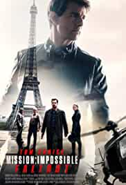
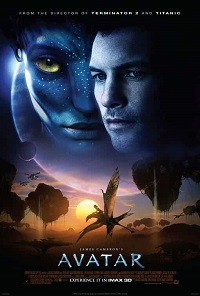
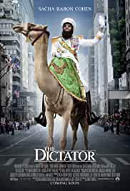
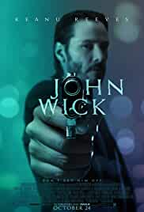

1. Titanic (1997)
2. Forrest Gump (1994)
3. Manhattan (1979)
4. Blood Diamond (2006)
5. Gladiator (2000)
6. Cast Away (2000)
7. Ratatouille (2007)
8. The Hangover (2009)
9. Pirates of the Caribbean: The Curse of the Black Pearl (2003)
10. Avatar (2009)
1. Lagaan: Once Upon a Time in India (2001)
2. Anand (1971)
3. 3 Idiots (2009)
4. Rang De Basanti (2006)
5. Gangs of Wasseypur (2012)
6. Swades (2004)
7. Mughal-E-Azam (1960)
8. Taare Zameen Par (2007)
9. A Wednesday (2008)
10. Dangal (2016)
After the devastating events of Avengers: Infinity War (2018), the universe is in ruins. With the help of remaining allies, the Avengers assemble once more in order to reverse Thanos' actions and restore balance to the universe.
Ethan Hunt and his IMF team, along with some familiar allies, race against time after a mission gone wrong.
A paraplegic Marine dispatched to the moon Pandora on a unique mission becomes torn between following his orders and protecting the world he feels is his home.
The heroic story of a dictator who risked his life to ensure that democracy would never come to the country he so lovingly oppressed.
An ex-hit-man comes out of retirement to track down the gangsters that killed his dog and took everything from him.
